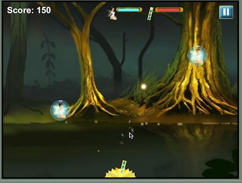
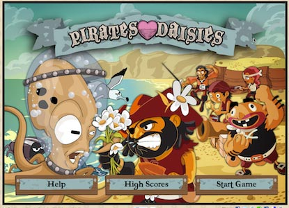

Основы рисования
Canvas — API для рисования, недавно добавленный в HTML и поддерживается большинством браузеров (даже Internet Explorer 9). Canvas позволяет рисовать всё, что вы хотите прямо в браузере без использования плагинов, вроде Flash или Java. Canvas с его обманчиво простым API может революционно преобразовать создание веб-приложений для всех устройств, а не только десктопных.
Эти скриншоты позволят вам почувствовать вкус возможностей Canvas.


Что такое Canvas?
Canvas — API для двумерного рисования. По сути браузер даёт вам прямоугольную область на экране, в которой вы можете рисовать линии, фигуры, изображения, текст, практически всё что хотите. Canvas первоначально был создан Apple для их виджетов, но с тех пор был принят всеми разработчиками основных браузеров и теперь Canvas является частью спецификации HTML5. Вот небольшой пример, как выглядит некоторый код Canvas:
<html>
<body>
<canvas width="800" height="600" id="canvas"></canvas>
<script>
var canvas = document.getElementById('canvas');
var c = canvas.getContext('2d');
c.fillStyle = "red";
c.fillRect(100,100,400,300);
</script>
</body>
</html>Простой красный прямоугольник
Данный прямоугольник нарисован функцией context.fillRect().
Важно понимать, что Canvas предназначен для рисования пикселями. В нём нет фигур или векторов. Нет объектов для связывания с обработчиками событий. Это просто рисунки пикселями на экране. Как мы ещё увидим в этом и сила и слабость.
Как это связано с другими веб-технологиями?
Есть четыре способа нарисовать что-либо на веб-странице: Canvas, SVG, CSS и прямая анимация через DOM. Canvas содержит отличия от остальных трёх.
SVG — это API для рисования векторных фигур. Каждая фигура представляет собой объект, который вы можете связать с обработчиками событий. При масштабировании фигуры остаются сглаженными, в то время как в Canvas заметны пиксели.
CSS в реальности предназначен для стилизации элементов. Поскольку DOM не содержит никаких объектов, которые рисуются в Canvas, вы не можете использовать CSS для их стилизации. CSS будет влиять только на прямоугольную площадь самого Canvas, так что вы можете установить границы, цвет фона и на этом всё.
Анимация через DOM: DOM или Document Object Model (объектная модель документа) определяет каждый объект на экране. Анимация с помощью CSS или JavaScript для передвижения объектов в некоторых случаях может быть более плавной, чем сделанной через Canvas, но это зависит от реализации вашего браузера.
Что? Где? Когда?
Итак, когда следует использовать Canvas вместо SVG, CSS или элементов DOM? Ну, Canvas по уровню ниже, чем другие, так что у вас больше контроля над рисованием и тратится меньше памяти, но взамен нужно писать больше кода. Используйте SVG, когда у вас имеются фигуры, которые вы хотите отобразить на экране, как на карте сделанной в Adobe Illustrator. Используйте CSS или DOM-анимацию, когда у вас есть большие статические области, которые вы хотите анимировать или желаете использовать трёхмерные преобразования. Для схем, графиков, динамических диаграмм и, конечно, видеоигр, Canvas — наилучший выбор. В дальнейшем мы обсудим несколько библиотек, которые позволяют делать вам больше штук, ориентированных на векторы и объекты, используя Canvas.
Прежде чем двигаться дальше, хочу пояснить, что когда я говорю о Canvas, то подразумеваю двумерный API. Также существует трёхмерный API в работах называемых WebGL. Я не собираюсь о нём рассказывать, потому что он всё ещё находится в разработке и браузеры поддерживают его довольно плохо. Также этот по существу OpenGL от JavaScript находится на более низком уровне чем Canvas и гораздо сложнее в использовании. Когда WebGL станет более зрелым, мы вернёмся к нему в следующих главах.
Поддержка в браузерах
И, наконец, прежде чем мы углубимся в работу с Canvas, давайте поговорим о том, где вы можете его использовать. К счастью Canvas это теперь стабильный API и большинство современных браузеров поддерживают его в некоторой мере. Поддерживает даже Internet Explorer начиная с версии 9 и очень хорошо.
| Internet Explorer | Chrome | Opera | Safari | Firefox |
| 9 | 10 | 9 | 3 | 4 |
Большинство мобильных платформ поддерживают Canvas, потому что в основном они основаны на WebKit, который уже давно имеет хорошую поддержку. Я знаю, что поддерживает WebOS, iOS, Android. Считаю, что BlackBerry тоже, по крайней мере, на PlayBook. Windows Phone 7 не поддерживает, но это может измениться в будущем обновлении.
| iOS | webOS | Android | BlackBerry | Windows Phone 7 |
| все | все | 2 | PlayBook и OS 6.0 |
Пока не все мобильные устройства содержат полную или быструю поддержку Canvas, поэтому позже мы рассмотрим, как оптимизировать наш код для мобильных устройств.
Простое рисование
Как я уже говорил ранее, Canvas — это просто API. Если вы уже делали работу с программированием на Flash или Java 2D, то это должно показаться довольно знакомым. Вы получаете указатель на графический контекст, устанавливаете некоторые свойства, такие как цвет текущей заливки или контура и затем рисуете несколько фигур. Вот некоторые примеры.
В данном примере мы устанавливаем текущий цвет красным и рисуем прямоугольник. Перетащите мышью числа в коде для изменения значений и посмотрите, как это влияет на прямоугольник.
ctx.fillStyle = "red";
//x, y, ширина, высота
ctx.fillRect(20,30,40,50);Вот ещё один.
c.fillStyle = '#ccddff';
c.beginPath();
c.moveTo(50,20);
c.lineTo(200,50);
c.lineTo(150,80);
c.closePath();
c.fill();
c.strokeStyle = 'rgb(0,128,0)';
c.lineWidth = 5;
c.stroke();В этом примере мы устанавливаем текущий цвет заливки, создаём контур, а затем заливаем и обводим его. Следует отметить, что контекст отслеживает цвет заливки и цвет обводки отдельно. Также обратите внимание на разные формы указания цвета. fillStyle и strokeStyle может быть любым корректным цветом из CSS, таким как шестнадцатеричным, названием или функцией rgb().
Контуры
Canvas напрямую поддерживает только прямоугольник. Чтобы нарисовать любую другую фигуру необходимо сделать это самостоятельно с помощью контуров. Контуры это фигуры, созданные кучей прямых или изогнутых отрезков линий. В Canvas вы должны вначале определить контур через beginPath(), затем залить его или использовать как маску. Вы определяете каждый отрезок такими функциями как moveTo(), lineTo() и bezierCurveTo(). В данном примере фигура рисуется с помощью moveTo(), затем идёт кривая Безье и несколько линий. После создания контура он заливается и обводится.
c.fillStyle = 'red';
c.beginPath();
c.moveTo(10,30);
c.bezierCurveTo(50,90,159,-30,200,30);
c.lineTo(200,90);
c.lineTo(10,90);
c.closePath();
c.fill();
c.lineWidth = 4;
c.strokeStyle = 'black';
c.stroke();Система координат
Пара слов о системе координат. Canvas ведёт отсчёт от левого верхнего угла с осью у, которая ведёт вниз. Это традиционно для компьютерной графики, но если вы хотите указать другую точку отсчёта, то можете сделать это через трансформацию, о которой мы расскажем позже. Ещё одна важная вещь — спецификация определяет координаты в левом верхнем углу пикселя. Это означает, что если вы рисуете вертикальную линию шириной в один пиксель, начиная с 5.0, то на самом деле это охватывает половину соседних пикселей (от 4.5 до 5.5). Чтобы обойти это сместите ваши координаты по оси х на 0.5. Тогда это даст вам линию, которая идёт с 5.0 до 6.0. В качестве альтернативы вы можете использовать ширину линии, указав 2 или 4.

Изображения
Canvas может выводить изображения через функцию drawImage.
Есть несколько форм drawImage. Вы можете нарисовать изображение непосредственно на экране в обычном масштабе или растянуть и обрезать его, как вам нравится. Обрезка и растяжение изображений может быть очень удобны для создания спецэффектов в играх, потому что интерполяция изображения часто работает намного быстрее, чем другие типы масштабирования.
ctx.drawImage(img, 0,0); //normal drawing
ctx.drawImage(img, //draw stretched
0,0,66,66, //source (x,y,w,h)
100,0,103,100//destination (x,y,w,h)
);
ctx.drawImage(img, //draw a slice
20,10,20,20, //source coords (x,y,w,h)
250,0,250,50//destination coords (x,y,w,h)
);Попробуйте поменять переменные, чтобы увидеть, как работает растяжение и обрезка. Чтобы растянуть изображение вы должны указать исходные и конечные координаты. Исходные координаты говорят drawImage какие пиксели взять из изображения. Поскольку рисунок выше имеет размеры 67x67 пикселей, то используя 0,0,66,66 мы отобразим изображение целиком. Конечные координаты говорят drawImage куда поместить пиксели на экране. Изменяя значения w и h можно растянуть и сжать изображение.
Обрезка работает аналогично, но используются исходные координаты, которые не охватывают изображение целиком. Когда вы берёте фрагмент изображения убедитесь, что вы не выходить за его исходные границы, иначе изображение исчезнет.
Текст
Canvas может также рисовать текст. Атрибуты шрифта такие же, как и в аналоге CSS, так что вы можете установить стиль, размер и семейство шрифта. Обратите внимание, что функция fillText(строка,x,y) использует базовую линию текста, а не его верхний край. Если вы поместите ваш текст в 0,0, то он нарисуется за пределами верхней части экрана. Так что опустите y на соответствующее значение.
ctx.fillStyle = "black";
ctx.font = "italic "+96+"pt Arial ";
ctx.fillText("this is text", 20,150);Градиенты
Canvas может заливать фигуры градиентом вместо цвета. Вот линейный градиент:
var grad = ctx.createLinearGradient(0,0,200,0);
grad.addColorStop(0, "white");
grad.addColorStop(0.5, "red");
grad.addColorStop(1, "black");
ctx.fillStyle = grad;
ctx.fillRect(0,0,400,200);Важно отметить, что градиент закрашивается в той же системе координат, какой рисуется фигура, а не внутренних координат фигуры. В данном примере фигура рисуется в 0,0. Если мы изменим фигуру на 100,100, то градиент будет по-прежнему находиться в начале экрана, так что окажется меньше градиента, вроде этого:
var grad = ctx.createLinearGradient(0,0,200,0);
grad.addColorStop(0, "white");
grad.addColorStop(0.5, "red");
grad.addColorStop(1, "black");
ctx.fillStyle = grad;
ctx.fillRect(100,100,400,200);Итак, в случае, когда вы считаете, что заливаете фигуру градиентом, но видите единственный цвет, то это может быть потому, что ваши координаты выключены.
Вот и все основы рисования. Давайте остановимся на достигнутом и выполним несколько упражнений в следующей главе. У вас уже должен быть установлен браузер и текстовый редактор. Я рекомендую использовать Chrome, поскольку он содержит хорошие инструменты отладки и jEdit, потому что он бесплатный и кросс-платформенный. Но вы можете использовать браузер и редактор по своему усмотрению.

Все материалы сайта доступны по лицензии Creative Commons «Attribution-NonCommercial» («Атрибуция — Некоммерческое использование») 4.0 Всемирная, если не указано иное.